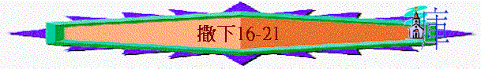

|
成 敗 與 興 衰 |
||
|
事
奉 |
民
族 |
君
王 |
|
撒上1-3 |
撒上4-7 |
撒上8-撒下24 |
丙.君王的興衰(撒上8-撒下24)
二.大衛的興衰(撒上16-撒下24)
Ⅳ
.大衛失意的時期(撒下11-21)1.大衛犯罪(11-12)
2.家中禍患(13-18)
A.家中淫亂(13:1-22)
B.兄弟仇殺(13:23-39)
C.兒子叛變(14-18)
a.父親的寛容(14:1-24)
b.兒子的叛變(14:25-15:12)
c.大衛的逃亡(15:13-17:29)
(1)逃亡的安排
(2)逃亡的經過
「（大衛逃避他兒子押沙龍的時候作的詩。）耶和華啊，我的敵人何其加增；有許多人起來攻擊我。有許多人議論我說：他得不著神的幫助。（細拉）但你耶和華是我四圍的盾牌，是我的榮耀，又是叫我抬起頭來的。」詩3:1-3
∼大衛在逃難的日子，遇到很多敵人，但他卻體會神是他盾牌與榮耀
(A)洗巴的欺言
「掃羅家有一個僕人，名叫洗巴，有人叫他來見大衛，王問他說：「你是洗巴嗎？」回答說：「僕人是。」王說：「掃羅家還有人沒有？我要照神的慈愛恩待他。」洗巴對王說：「還有約拿單的一個兒子，是瘸腿的。」王說：「他在那裡？」洗巴對王說：「他在羅底巴，亞米利的兒子瑪吉家裡。」」9:2-4
「大衛剛過山頂，見米非波設的僕人洗巴拉著備好了的兩匹驢，驢上馱著二百麵餅，一百葡萄餅，一百個夏天的果餅，一皮袋酒來迎接他。王問洗巴說：「你帶這些來是什麼意思呢？」洗巴說：「驢是給王的家眷騎的；麵餅和夏天的果餅是給少年人吃的；酒是給在曠野疲乏人喝的。」王問說：「你主人的兒子在那裡呢？」洗巴回答王說：「他仍在耶路撒冷，因他說：『以色列人今日必將我父的國歸還我。』」王對洗巴說：「凡屬米非波設的都歸你了。」洗巴說：「我叩拜我主我王，願我在你眼前蒙恩。」」16:1-4
∼米非波設是約拿單的兒子，得大衛恩眷，可與王一同進食，而在大衛逃難的日子，米非波設的僕人預備了食物及酒水供大衛們用
∼但洗巴卻欺哄了大衛，指控米非波設有意趁大衛落難時，復興掃羅家，引致大衛要充公米非波設的家業，歸給他的僕人洗巴
(B)示每的咒駡
「大衛王到了巴戶琳，見有一個人出來，是掃羅族基拉的兒子，名叫示每。他一面走一面咒罵，又拿石頭砍大衛王和王的臣僕；眾民和勇士都在王的左右。示每咒罵說：「你這流人血的壞人哪，去吧去吧！你流掃羅全家的血，接續他作王；耶和華把這罪歸在你身上，將這國交給你兒子押沙龍。現在你自取其禍，因為你是流人血的人。」」16:5-8
「洗魯雅的兒子亞比篩對王說：「這死狗豈可咒罵我主我王呢？求你容我過去，割下他的頭來。」王說：「洗魯雅的兒子，我與你們有何關涉呢？他咒罵是因耶和華吩咐他說：『你要咒罵大衛。』如此，誰敢說你為什麼這樣行呢？」」16:9-10
「在你這裡有巴戶琳的便雅憫人，基拉的兒子示每；我往瑪哈念去的那日，他用狠毒的言語咒罵我，後來卻下約但河迎接我，我就指著耶和華向他起誓說：『我必不用刀殺你。』現在你不要以他為無罪。你是聰明人，必知道怎樣待他，使他白頭見殺，流血下到陰間。」」王上2:8-9
∼巴戶琳是便雅憫支派的村鎮，示每也是便雅憫支派掃羅族的人，他可能因掃羅家被滅，而遷怒大衛，咒駡他
∼但大衛當時體會到這咒駡是出於神的容許與吩咐，他可能也體會到是他犯罪帶來神管教的結果
∼但大衛後來卻知道攻擊神的所膏者理應受報應，所以吩咐他兒子處治示每
(C)兒子的追擊
(a)好友的內應
「押沙龍問戶篩說：「這是你恩待朋友嗎？為什麼不與你的朋友同去呢？」戶篩對押沙龍說：「不然，耶和華和這民，並以色列眾人所揀選的，我必歸順他，與他同住。再者，我當服事誰呢？豈不是前王的兒子嗎？我怎樣服事你父親，也必照樣服事你。」」撒下16:17-19
「你若回城去，對押沙龍說：『王啊，我願作你的僕人；我向來作你父親的僕人，現在我也照樣作你的僕人。』這樣，你就可以為我破壞亞希多弗的計謀。」15:34
∼大衛曾安排他好友戶篩返回耶路撒冷作他的內應，戶篩也假意投靠了押沙龍
(b)叛臣的惡謀
∼亞希多弗是大衛時代的謀士，現跟隨了沙龍，並且向他獻上惡謀
((1))親近父王妃嬪
「押沙龍對亞希多弗說：「你們出個主意，我們怎樣行才好？」亞希多弗對押沙龍說：「你父所留下看守宮殿的妃嬪，你可以與他們親近。以色列眾人聽見你父親憎惡你，凡歸順你人的手就更堅強。」於是人為押沙龍在宮殿的平頂上支搭帳棚；押沙龍在以色列眾人眼前，與他父的妃嬪親近。」16:20-22
「耶和華如此說：『我必從你家中興起禍患攻擊你；我必在你眼前把你的妃嬪賜給別人，他在日光之下就與他們同寢。」12:11
∼若一個人奪去了之前王的妃嬪，即向眾人表明自己已佔有之前王的一切權柄
∼亞希多弗建議押沙龍親近大衛王的妃嬪
∼也應驗神要大衛的妃嬪在日光之下歸了別人的管教
((2))追擊父王性命
「亞希多弗又對押沙龍說：「求你准我挑選一萬二千人，今夜我就起身追趕大衛，趁他疲乏手軟，我忽然追上他，使他驚惶；跟隨他的民必都逃跑，我就單殺王一人，」17:1-2
(c)惡謀的被破
「戶篩又說：「你知道，你父親和跟隨他的人都是勇士，現在他們心裡惱怒，如同田野丟崽子的母熊一般，而且你父親是個戰士，必不和民一同住宿。他現今或藏在坑中或在別處，若有人首先被殺，凡聽見的必說：『跟隨押沙龍的民被殺了。』雖有人膽大如獅子，他的心也必消化；因為以色列人都知道你父親是英雄，跟隨他的人也都是勇士。依我之計，不如將以色列眾人從但直到別是巴，如同海邊的沙那樣多聚集到你這裡來，你也親自率領他們出戰。」17:8-11
「押沙龍和以色列眾人說：「亞基人戶篩的計謀比亞希多弗的計謀更好！」這是因耶和華定意破壞亞希多弗的良謀，為要降禍與押沙龍。」17:14
∼戶篩卻指出亞希多弗的計劃不善，他目的是拖延押沙龍立時的追擊，讓大衛可以有時間逃走
(d)內應的報信
「戶篩對祭司撒督和亞比亞他說：「亞希多弗為押沙龍和以色列的長老所定的計謀是如此如此，我所定的計謀是如此如此。現在你們要急速打發人去，告訴大衛說：『今夜不可住在曠野的渡口，務要過河，免得王和跟隨他的人都被吞滅。』」」17:15-16
「他們走後，二人從井裡上來，去告訴大衛王說：「亞希多弗如此如此定計害你，你們務要起來，快快過河。」於是大衛和跟隨他的人都起來，過約但河。到了天亮，無一人不過約但河的。」17:21-22
(e)謀士的自縊
「亞希多弗見不依從他的計謀，就備上驢，歸回本城；到了家，留下遺言，便吊死了，葬在他父親的墳墓裡。」17:23
∼為何亞希多弗自縊？可能由於他的意見一直受人尊重，今次不接受被拒絕，而他不能受，又或者他知道若他意思不被接納，至終押沙龍王朝令為推倒，他也會被殺
(e)攻擊的預備
「大衛到了瑪哈念，押沙龍和跟隨他的以色列人也都過了約但河。押沙龍立亞瑪撒作元帥，代替約押。亞瑪撒是以實瑪利人（又作以色列人）以特拉的兒子。以特拉曾與拿轄的女兒亞比該親近；這亞比該與約押的母親洗魯雅是姊妹。押沙龍和以色列人都安營在基列地。」17:24-26
∼押沙龍派亞瑪撒為元帥，預備攻擊大衛
∼而亞瑪撒與押沙龍及約押是表兄弟的關係
(D)三人的供應
「大衛到了瑪哈念，亞捫族的拉巴人拿轄的兒子朔比，羅底巴人亞米利的兒子瑪吉，基列的羅基琳人巴西萊，帶著被、褥、盆、碗、瓦器、小麥、大麥、麥麵、炒穀、豆子、紅豆、炒豆、蜂蜜、奶油、綿羊、奶餅，供給大衛和跟隨他的人吃；他們說：「民在曠野，必飢渴困乏了。」」17:27-29
「王說：「他在那裡？」洗巴對王說：「他在羅底巴，亞米利的兒子瑪吉家裡。」」9:4
∼朔比是亞捫王拿轄的兒子，他兄弟哈嫩曾拒絕大衛的好意而羞辱大衛的僕人
∼瑪吉曾照顧米非波設多年
∼巴西萊是亞蘭名，他應是亞蘭人
∼大衛在走難的日子，得到三人在食物上的供應
d.至終的敗亡(18)
(1)軍兵的安排
「大衛數點跟隨他的人，立千夫長、百夫長率領他們。大衛打發軍兵出戰，分為三隊：一隊在約押手下，一隊在洗魯雅的兒子、約押兄弟亞比篩手下，一隊在迦特人以太手下。大衛對軍兵說：「我必與你們一同出戰。」軍兵卻說：「你不可出戰。若是我們逃跑，敵人必不介意；我們陣亡一半，敵人也不介意。因為你一人強似我們萬人，你不如在城裡預備幫助我們。」」18:1-3
「王囑咐約押、亞比篩、以太說：「你們要為我的緣故寬待那少年人押沙龍。」王為押沙龍囑咐眾將的話，兵都聽見了。」18:5
∼大衛以三隊軍隊出擊迎戰押沙龍，他也囑咐將領不要殺押沙龍
(2)叛軍的敗陣
「兵就出到田野迎著以色列人，在以法蓮樹林裡交戰。以色列人敗在大衛的僕人面前；那日陣亡的甚多，共有二萬人。因為在那裡四面打仗，死於樹林的比死於刀劍的更多。」18:6-8
∼「死於樹林的」--可能指叛軍在樹中迷失方向，也被埋伏，至終敗亡
(3)押沙龍被殺
「押沙龍偶然遇見大衛的僕人。押沙龍騎著騾子，從大橡樹密枝底下經過，他的頭髮被樹枝繞住，就懸掛起來，所騎的騾子便離他去了。」18:9
「那人對約押說：「我就是得你一千舍客勒銀子，我也不敢伸手害王的兒子；因為我們聽見王囑咐你和亞比篩並以太說：『你們要謹慎，不可害那少年人押沙龍。』我若妄為害了他的性命，就是你自己也必與我為敵（原來，無論何事都瞞不過王。）」約押說：「我不能與你留連。」約押手拿三杆短槍，趁押沙龍在橡樹上還活著，就刺透他的心。給約押拿兵器的十個少年人圍繞押沙龍，將他殺死。」18:12-15
∼「十舍客勒銀子」約一年的工資
∼約押知道若不趁此機會殺死押沙龍，將來後患無窮，所以他不聽王命令，用短槍趁押沙龍在橡樹上被樹枝纒著時，剌透他的心，而他的隨從也聯手將他殺死
(4)二人的報信
(A)戰勝的消息
「撒督的兒子亞希瑪斯說：「容我跑去，將耶和華向仇敵給王報仇的信息報與王知。」」18:19
「亞希瑪斯向王呼叫說：「平安了！」就在王面前臉伏於地叩拜，說：「耶和華你的神是應當稱頌的，因他已將那舉手攻擊我主我王的人交給王了。」王問說：「少年人押沙龍平安不平安？」亞希瑪斯回答說：「約押打發王的僕人，那時僕人聽見眾民大聲喧嘩，卻不知道是什麼事。」」18:28-29
∼亞希瑪斯將得勝仇敵的消息帶給大衛，但他卻隱瞞了押沙龍被殺之消息
(B)兒亡的惡訊
「古示人也來到，說：「有信息報給我主我王！耶和華今日向一切興起攻擊你的人給你報仇了。」王問古示人說：「少年人押沙龍平安不平安？」古示人回答說：「願我主我王的仇敵，和一切興起要殺害你的人，都與那少年人一樣。」」18:31-32
(5)大衛的哀傷
「王就心裡傷慟，上城門樓去哀哭，一面走一面說：「我兒押沙龍啊！我兒，我兒押沙龍啊！我恨不得替你死，押沙龍啊，我兒！我兒！」」18:33
3.民心不安(19-21)
A.士氣的低沉
a.士氣的轉變
「有人告訴約押說：「王為押沙龍哭泣悲哀。」眾民聽說王為他兒子憂愁，他們得勝的歡樂卻變成悲哀。那日眾民暗暗的進城，就如敗陣逃跑、慚愧的民一般。」19:1-3
∼眾民由得勝的歡樂變為敗陣的悲哀
∼為何會有此情況出現？因眾民以為為王打勝仗，使王復得國權，王會因此歡喜，但大衛卻因押沙龍死亡而哀傷
∼眾民可能感到他們這次為大衛買命是否有意義，他們殺敗押沙龍是否令王不悅
b.約押的提醒
(1)愛那恨自己的人
「你卻愛那恨你的人，恨那愛你的人。你今日明明的不以將帥、僕人為念。我今日看明，若押沙龍活著，我們都死亡，你就喜悅了。」19:6
(2)不顧帥僕的感受
「約押進去見王，說：「你今日使你一切僕人臉面慚愧了！他們今日救了你的性命和你兒女妻妾的性命，」19:5
(3)不理嚴重的後果
「現在你當出去，安慰你僕人的心。我指著耶和華起誓：你若不出去，今夜必無一人與你同在一處；這禍患就比你從幼年到如今所遭的更甚！」於是王起來，坐在城門口。眾民聽說王坐在城門口，就都到王面前。以色列人已經逃跑，各回各家去了。」19:7-8
B.回歸的分爭
a.大衛的回歸
(1)以色列人的迎接
「以色列眾支派的人紛紛議論說：「王曾救我們脫離仇敵的手，又救我們脫離非利士人的手，現在他躲避押沙龍逃走了。我們膏押沙龍治理我們，他已經陣亡。現在為什麼不出一言請王回來呢？」」19:9-10
∼眾支派應不包括猶大支派
(2)猶大支派的迎接
「大衛王差人去見祭司撒督和亞比亞他，說：「你們當向猶大長老說：『以色列眾人已經有話請王回宮，你們為什麼落在他們後頭呢？你們是我的弟兄，是我的骨肉，為什麼在人後頭請王回來呢？』也要對亞瑪撒說：『你不是我的骨肉嗎？我若不立你替約押常作元帥，願神重重的降罰與我！』」」19:11-13
∼亞瑪撒是大衛的外甥，似乎大衛也有意撤掉約押作元帥，可能因他曾殺押尼珥及押沙龍，所以用昔日叛軍將領成為今日的元帥，也得其他以色列民的心
(3)示每的迎接
「巴戶琳的便雅憫人、基拉的兒子示每急忙與猶大人一同下去迎接大衛王。」19:16
「對王說：「我主我王出耶路撒冷的時候，僕人行悖逆的事，現在求我主不要因此加罪與僕人，不要記念，也不要放在心上。僕人明知自己有罪，所以約瑟全家之中，今日我首先下來迎接我主我王。」洗魯雅的兒子亞比篩說：「示每既咒罵耶和華的受膏者，不應當治死他嗎？」大衛說：「洗魯雅的兒子，我與你們有何關涉，使你們今日與我反對呢？今日在以色列中豈可治死人呢？我豈不知今日我作以色列的王嗎？」於是王對示每說：「你必不死。」王就向他起誓。」19:19-23
∼示每見大衛得勢後，立刻改變先前對大的態度，比以色列其他支派(即約瑟全家)更快迎接大衛，大衛暫免他該死之罪
(4)米非波設的迎接
「掃羅的孫子米非波設也下去迎接王。他自從王去的日子，直到王平平安安的回來，沒有修腳，沒有剃鬍鬚，也沒有洗衣服。他來到耶路撒冷迎接王的時候，王問他說：「米非波設，你為什麼沒有與我同去呢？」
他回答說：「我主我王，僕人是瘸腿的。那日我想要備驢騎上，與王同去，無奈我的僕人欺哄了我，又在我主我王面前讒毀我。然而我主我王如同神的使者一般，你看怎樣好，就怎樣行吧！」19:24-27
(5)巴西萊的迎接
「基列人巴西萊從羅基琳下來，要送王過約但河，就與王一同過了約但河。巴西萊年紀老邁，已經八十歲了。王住在瑪哈念的時候，他就拿食物來供給王；他原是大富戶。王對巴西萊說：「你與我同去，我要在耶路撒冷那裡養你的老。」巴西萊對王說：「我在世的年日還能有多少，使我與王同上耶路撒冷呢？」19:31-34
「求你准我回去，好死在我本城，葬在我父母的墓旁。這裡有王的僕人金罕，讓他同我主我王過去，可以隨意待他。」」19:37
b.支派的紛爭
「以色列眾人來見王，對他說：「我們弟兄猶大人為什麼暗暗送王和王的家眷，並跟隨王的人過約但河？」猶大眾人回答以色列人說：「因為王與我們是親屬，你們為何因這事發怒呢？我們吃了王的什麼呢？王賞賜了我們什麼呢？」以色列人回答猶大人說：「按支派，我們與王有十分的情分；在大衛身上，我們也比你們更有情分。你們為何藐視我們，請王回來不先與我們商量呢？」但猶大人的話比以色列人的話更硬。」19:41-43
∼「十分的情分」可能指以色列(北面)的支派有十個(不計猶大支派)
∼猶大支派因為兄弟情分(大衛屬猶大支派)迎接王，但其餘十支派卻因此產生不忿與爭競，指責他們私自搶先暗暗迎接大衛回來，而種下下文的叛變事件
C.示巴的叛變
a.示巴的叛亂
「在那裡恰巧有一個匪徒，名叫示巴，是便雅憫人比基利的兒子。他吹角，說：「我們與大衛無分，與耶西的兒子無涉。以色列人哪，你們各回各家去吧！」於是以色列人都離開大衛，跟隨比基利的兒子示巴。但猶大人從約但河直到耶路撒冷，都緊緊跟隨他們的王。」20:1-2
b.亞瑪撒的被殺
「王對亞瑪撒說：「你要在三日之內將猶大人招聚了來，你也回到這裡來。」」20:4
「約押的人和基利提人、比利提人，並所有的勇士，都跟著亞比篩，從耶路撒冷出去追趕比基利的兒子示巴。他們到了基遍的大磐石那裡，亞瑪撒來迎接他們。那時約押穿著戰衣，腰束佩刀的帶子，刀在鞘內；約押前行，刀從鞘內掉出來。約押左手拾起刀來，對亞瑪撒說：「我兄弟，你好啊！」就用右手抓住亞瑪撒的鬍子，要與他親嘴。亞瑪撒沒有防備約押手裡所拿的刀；約押用刀刺入他的肚腹，他的腸子流在地上，沒有再刺他，就死了。約押和他兄弟亞比篩往前追趕比基利的兒子示巴。」20:7-10
「你知道洗魯雅的兒子約押向我所行的，就是殺了以色列的兩個元帥：尼珥的兒子押尼珥和益帖的兒子亞瑪撒。他在太平之時流這二人的血，如在爭戰之時一樣，將這血染了腰間束的帶和腳上穿的鞋。所以你要照你的智慧行，不容他白頭安然下陰間。」王上2:5-6
∼亞瑪撒是大衛軍隊的元帥，但約押可能因嫉妒及權勢被奪而在亞瑪撒沒防備下，殺了他
∼亞瑪撒不是死在公平戰爭中，而死在約押的暗殺，所以大衛在晚年時交托了所羅門要追討他的罪
c.示巴的被殺
「約押和跟隨的人到了伯瑪迦的亞比拉，圍困示巴，就對著城築壘；跟隨約押的眾民用錘撞城，要使城塌陷。」撒下20:15
「約押回答說：「我決不吞滅毀壞，乃因以法蓮山地的一個人比基利的兒子示巴舉手攻擊大衛王，你們若將他一人交出來，我便離城而去。」婦人對約押說：「那人的首級必從城牆上丟給你。」婦人就憑他的智慧去勸眾人。他們便割下比基利的兒子示巴的首級，丟給約押。約押吹角，眾人就離城而散，各歸各家去了。約押回耶路撒冷，到王那裡。約押作以色列全軍的元帥；耶何耶大的兒子比拿雅統轄基利提人和比利提人；」20:20-23
∼約押的軍兵圍困示巴所在之地---亞比拉(以色列的極北部地方)，當中有一個聰明婦人用她智慧勸服眾人將示巴殺下交給約押
D.三年的饑荒
a.饑荒的原因
(1)不守約
「原來這基遍人不是以色列人，乃是亞摩利人中所剩的；以色列人曾向他們起誓，不殺滅他們，掃羅卻為以色列人和猶大人發熱心，想要殺滅他們。大衛王召了他們來，」21:2
「以色列人起行，第三天到了他們的城邑，就是基遍、基非拉、比錄、基列耶琳。因為會眾的首領已經指著耶和華以色列的神向他們起誓，所以以色列人不擊殺他們；全會眾就向首領發怨言。眾首領對全會眾說：「我們已經指著耶和華以色列的神向他們起誓，現在我們不能害他們。我們要如此待他們，容他們活著，免得有忿怒因我們所起的誓臨到我們身上。」」書9:17-20
∼以色列曾與基遍人立下盟約，不會加害他們，但掃羅卻為以色列人和猶大人發熱心，想要殺滅他們。
(2)流人血
「大衛年間有饑荒，一連三年，大衛就求問耶和華。耶和華說：「這饑荒是因掃羅和他流人血之家殺死基遍人。」21:1
b.解決的過程
(1)交出掃羅的子孫七人
「他們對王說：「那從前謀害我們、要滅我們、使我們不得再住以色列境內的人，現在願將他的子孫七人交給我們，我們好在耶和華面前，將他們懸掛在耶和華揀選掃羅的基比亞。」王說：「我必交給你們。」」21:5-6
∼掃羅家殺了基遍家的人，現在基遍人要大衛交出掃羅子七人
(2)仍憐愛約拿單的兒子
「王因為曾與掃羅的兒子約拿單指著耶和華起誓結盟，就愛惜掃羅的孫子、約拿單的兒子米非波設，不交出來，卻把愛雅的女兒利斯巴給掃羅所生的兩個兒子亞摩尼、米非波設，和掃羅女兒米甲的姊姊給米何拉人巴西萊兒子亞得列所生的五個兒子交在基遍人的手裡。基遍人就把他們，在耶和華面前，懸掛在山上，這七人就一同死亡。被殺的時候正是收割的日子，就是動手割大麥的時候。」21:7-9
∼收割的日子在陽曆四月開始
(3)將掃羅家合葬於洗拉
「愛雅的女兒利斯巴用麻布在磐石上搭棚，從動手收割的時候直到天降雨在屍身上的時候，日間不容空中的雀鳥落在屍身上，夜間不讓田野的走獸前來糟踐。有人將掃羅的妃嬪愛雅女兒利斯巴所行的這事告訴大衛。」21:10-11
「大衛將掃羅和他兒子約拿單的骸骨從那裡搬了來，又收殮被懸掛七人的骸骨，將掃羅和他兒子約拿單的骸骨葬在便雅憫的洗拉，在掃羅父親基士的墳墓裡；眾人行了王所吩咐的。此後神垂聽國民所求的。
」21:13-14
∼「在磐石上搭棚」原文作「為自己舖在磐石上」
∼至終神聽國民的祈求，饑茺也止息了
E.非利士人的攻擊
a.攻擊的出現
「非利士人與以色列人打仗；大衛帶領僕人下去，與非利士人接戰，大衛就疲乏了。」21:15
b.大衛的軟弱
「偉人的一個兒子以實比諾要殺大衛；他的銅槍重三百舍客勒，又佩著新刀。但洗魯雅的兒子亞比篩幫助大衛，攻打非利士人，將他殺死。當日，跟隨大衛的人向大衛起誓說：「以後你不可再與我們一同出戰，恐怕熄滅以色列的燈。」21:16-17
c.勇士的得勝
「後來，以色列人在歌伯與非利士人打仗，戶沙人西比該殺了偉人的一個兒子撒弗。又在歌伯與非利士人打仗，伯利恆人雅雷俄珥金的兒子伊勒哈難殺了迦特人歌利亞。這人的槍桿粗如織布的機軸。21:18-19
「又在迦特打仗，那裡有一個身量高大的人，手腳都是六指，共有二十四個指頭；他也是偉人的兒子。這人向以色列人罵陣，大衛的哥哥示米亞的兒子約拿單就殺了他。這四個人是迦特偉人的兒子，都死在大衛和他僕人的手下。」21:20-22